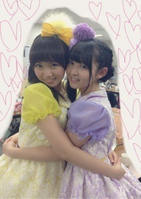

| 2013/03 27 Wed | 393回目*marika |
こんばんは
用事があって、学校行って
お仕事まで時間が中途半端だったので
本屋に2時間くらいいた...
脚が痛い！！！
.........
昨日はドラマ撮影後
さゆりん、まなつ、ねねと
中華街に行ってきました。

久しぶりに来た。
なんかいっぱい食べたよー
何食べたっけ！
全部美味しかった♪
楽しみにしていた
ゴマ団子がなかなか来なくて、
店員さんに必死にゴマ団子
アピールしたら困らせてしまった

ゴマ団子アピールてなんだ。
来たときの感動ったらもう。
ゴマ団子美味しいよー
その次にすきなのは
黒ごまプリンなのよー
みなさんが
すきな中華料理は何ですかー


ひよこみたいなひめたん
かわいい
 ふぇい
ふぇい
ふぇい
まりか
コメント(263)
2013/03/27 21:42